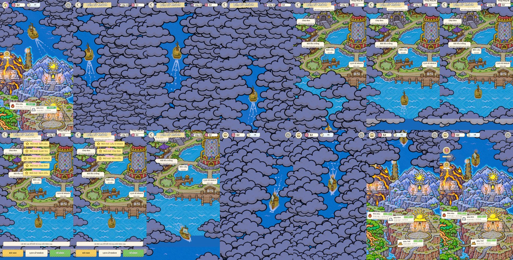
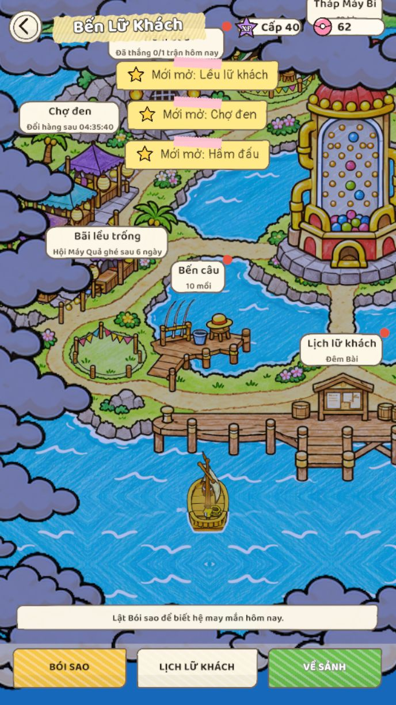
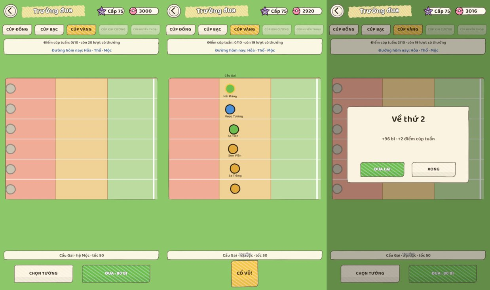
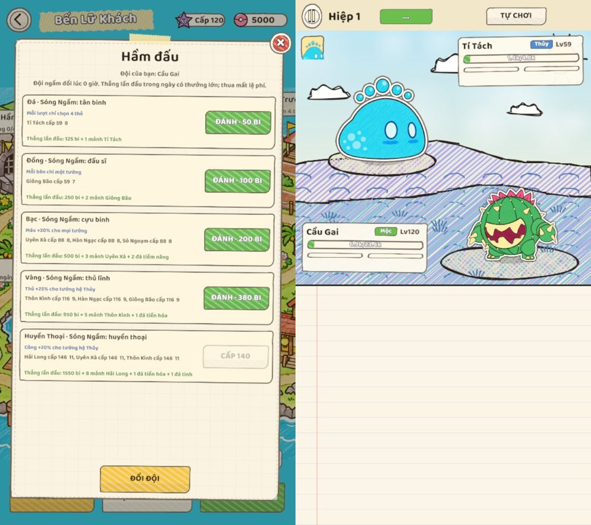

Đảo Casino "Bến Lữ Khách"
Chuyến tàu: nút giữa thanh dưới → tàu đi chếch trái qua mây → cập bến đảo; chiều về xuôi chếch phải (ảnh chụp lúc tối nên cảnh nhuộm đêm)

Tới đảo: bến tàu mới (thuyền của game cập ở mặt nước trước bến), mây vây quanh, nhuộm theo giờ

Trường đua (scene riêng): trước đua, đang đua, kết quả

Hầm đấu: hộp các bậc hôm nay, vào trận
